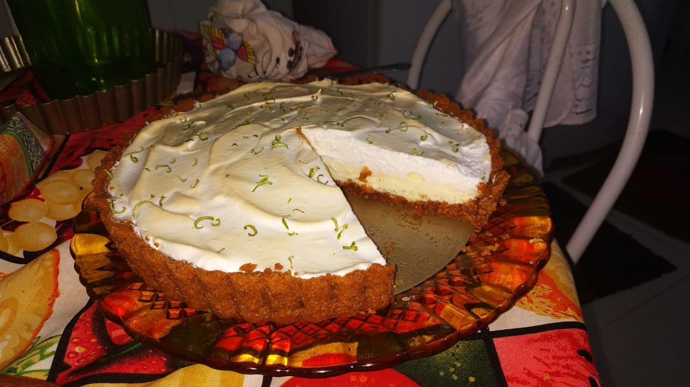

Lemon Pie

Description
This one is my favorite, it looks impressive and tastes deliciously tart.
Let's prepare it!
Ingredients
Crust
- 200g of Maizena crackers.
- 150g of butter.
Filling
- 1 can of sweetened condensed milk.
- 1 can of whipping cream.
- Juice of 4 lemons.
Icing
- 4 egg whites.
- 3 tablespoons of sugar
- Zests of 2 lemons for decoration
Steps
Crust
- Crumble the crackers on a blender of food processor.
- Add the butter and mix it.
- Place the dough in a pie mold.
- With your hands, spread the crumbles on the bottom and sides of the mold.
- Take it to a preheated oven at 180Cº for 10 minutes.
Filling
- Blend all the ingredients until they become a smooth and firm cream.
- Pour the cream in the crust and take it to the fridge for 30 minutes.
Icing
- Whip the egg whites and add the sugar
- Put the icing on top of the filling.
- Sprinkle the lemon zests.
- Put it in the oven until it becomes golden brown.
Return to main page